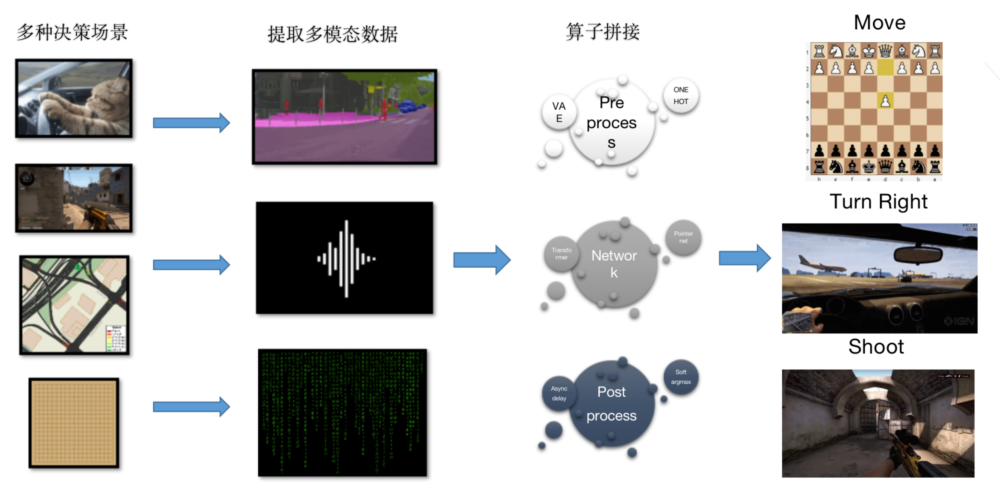

如何高效构建决策环境¶
本文档将介绍 DI-engine 中用于高效构建和标准化不同类型决策环境的系列工具，从而方便使用者将各式各样的原始决策问题转化为适合使用强化学习方法解决的形式。
关于一些特殊环境的说明可参考： 多智能体环境文档 和 multi-discrete 动作环境文档 。
1. 困境：决策环境复杂性¶
决策智能是一个覆盖面很广的抽象概念，从虚拟世界的多人对抗游戏到现实世界的棋类对弈和自动驾驶问题，都和决策智能技术有着紧密的联系。 这种任务类别的复杂性已经成为制约算法研究和应用的重要挑战，如图 1 所示，为了运用现有的强化学习方法高效解决决策问题，需要使用各种技术将原始场景转化为标准的 MDP，这其中包含一系列对于观察空间，动作空间，奖励空间等信息进行预处理和变换的操作。
{kind=link}
但对于不同类型的决策问题，又往往需要针对问题环境的特性，使用不同的预处理工具和算法，这就大大提高了技术的学习和迁移成本。 举例来说，gym 环境格式是决策智能领域最经典最常用的环境接口范式，GitHub 上也存在大量这种类型的开源决策智能环境，但直接将这些 gym 格式环境与经典的强化学习算法（如 DQN/PPO/SAC）相结合，往往不一定能够很快得到性能达标的智能体。 如果进一步深入去了解这些环境上已经训练收敛的代码示例，就会发现其中包含很多对环境的魔改和特殊适配。 这些定制化的知识和工具，如
One-hot 编码
目的： 将离散的类别信息表示成稀疏的二进制向量，使模型能够更好地理解和处理分类任务。
实施： 对于离散的类别，将每个类别映射为一个唯一的二进制向量，其中只有一个元素为1，其余为0。
Position encoding
目的： 在序列数据中引入位置信息，弥补模型无法捕捉元素顺序的不足，常用于处理时间序列或序列型数据。
实施： 为序列中的每个元素添加表示其位置的附加信息，通常使用三角函数或学习得到的编码。
Discretization
目的： 将连续的状态或动作空间离散化，以适应强化学习算法对离散空间的处理。
实施： 将连续空间划分为有限数量的离散块，将状态或动作映射到相应的离散值。
Normalization
目的： 将数据归一化到一定范围内，使模型更容易学习。
实施： 将数据映射到一定范围内，常用的归一化方法有 min-max 归一化和 z-score 归一化。
Abs->rel
目的： 将绝对位置信息转换为相对位置信息，使模型更容易学习。
实施： 将绝对位置信息转换为相对位置信息，常用的方法有相对位置编码和相对位置注意力。
Padding & Mask & Resize
目的： 将序列数据的长度统一，使模型能够处理变长序列。
实施： 通过填充、掩码或截断等方式，将序列数据的长度统一。
等，往往散乱地分布在不同的代码仓库和实验配置中，缺少一个统一的界面来总结和管理。
DI-engine 中统一和标准化了不同类型的决策问题，提供有关主流决策智能问题的模板和实践。 具体来说，DI-engine 首先在 DI-zoo 中集成了多种经典环境的训练和测试样例： DI-zoo Environment Versatility 。
而基于 DI-zoo 中的实践经验，DI-engine 中还抽象整合了环境包装器（Env Wrapper）和环境管理器（Env Manager）两类功能组件，用于更便利高效地完成决策环境的预处理和标准化，本文档将在下面两节详细展开介绍。
2. 易用性：环境包装器（Env Wrapper）¶
训练决策智能体时经常需要对环境的 MDP 定义进行预处理和转换，以追求更好的训练效果， 而这些处理技巧也具备一定的普适性。 例如对于某些环境，观测状态的归一化是很常见的预处理技巧，通过统一量纲和缩小尺度让训练更快且更加稳定。
基于多种不同类型决策环境的实践经验，DI-engine 将其中通用的部分提取出来，统一整合在环境包装器（Env Wrapper）中进行管理，以便后续使用和修改。 具体来说，环境包装器顾名思义就是在常见的 gym 格式环境外部添加对应的预处理模块，便捷地加入某些对于 obs/action/reward 的预处理函数。 一个简单的示例如下：
# 创建 Atari Pong 环境
env = gym.make('PongNoFrameskip-v4')
# 添加 episode 初始的空操作 Env Wrapper，避免游戏刚开始的随机性
env = NoopResetEnv(env, noop_max = 30)
# 添加将连续四个环境帧进行合并的 Env Wrapper
env = MaxAndSkipEnv(env, skip = 4)
DI-engine 提供了大量预定义且常用的 Env Wrapper，开发者可以根据自己的需求直接包裹在需要使用的环境之上。
所有 Env Wrapper 在实现时依然遵循 Gym.Wrapper格式，典型的例子有:
Wrapper Name |
Functionality Description |
|---|---|
EvalEpisodeReturnWrapper
|
为整个 episode 计算整体的 return，便于训练效果分析。 |
ActionRepeatWrapper
|
添加 sticky action* 机制，即构建状态转移包含随机性的环境。 |
GymHybridDictActionWrapper
|
添加混合动作的语义转换和映射规则。 |
TimeLimitWrapper
|
添加 episode 的最大步数限制，达到最大步数之后即将 episode 截断。 |
FlatObsWrapper
|
将多维复杂的观察信息展平成一维信息。 |
AllinObsWrapper
|
将 obs/reward 等信息整合在一起构成最终的输入，常用于 Decision Transformer 类型的算法。 |
NoopResetWrapper
|
为环境添加 episode 初始时的重置方法。在一些空操作后重置环境。 |
MaxAndSkipWrapper
|
每 skip 帧返回最近的两帧的最大值。 |
WarpFrameWrapper
|
将图像帧的大小进行缩放，并将 RGB 图像转换为 GREY 图像。 |
ScaledFloatFrameWrapper
|
将状态值标准化为 0~1。 |
ClipRewardWrapper
|
通过奖励的正负将奖励裁剪为 {+1, 0, -1}。 |
FrameStackWrapper
|
将堆叠好的 n_frames 个最近的状态帧设置为当前状态。 |
ObsTransposeWrapper
|
对观测状态的各个维度进行调整，将通道维放置在状态的第一维上。 |
RunningMeanStd
|
用于更新方差、均值和计数的 wrapper，可用于观察和奖励的动态归一化。 |
ObsNormWrapper
|
根据运行均值和标准差（running mean and std）对观测状态进行归一化。 |
RewardNormWrapper
|
根据运行的标准差（running std）对环境奖励进行归一化。 |
RamWrapper
|
通过扩展观测状态的维度，将原始环境的 ram 状态转换成类似图像的状态。 |
EpisodicLifeWrapper
|
让环境中的智能体的死亡来标志一个 episode 结束（游戏结束），并且只有在真正的游戏结束时才会重置游戏。一般来讲，这样有助于算法的价值估计。 |
FireResetWrapper
|
在环境重置时采取 fire 行动。 |
Note
* “sticky action” 机制通常是指在离散动作空间中的一种引入的技术，其中智能体在某些时间步上可能会执行与其选择的动作不同的动作。 这种机制的目的是模拟环境中的噪声或随机性，使得智能体需要更好地适应不确定性。
更进一步地，为了简化 Env Wrapper 的配置难度，为经典决策环境提供一键可用的默认 Env Wrapper 设置， 并直接做好相关的数据类型和接口转换（即从 gym 格式环境转换到 DI-engine 所需的 BaseEnv 衍生子环境）， 这部分模块中还设计实现了一种更便利的调用方式 DingEnvWrapper，对应的使用示例如下：
import gym
from ding.envs import DingEnvWrapper
cartpole_env = DingEnvWrapper(gym.make('CartPole-v0'))
pendulum_env = DingEnvWrapper(gym.make('Pendulum-v1'))
lunarlander_env = DingEnvWrapper(cfg={'env_id': 'LunarLander-v2', env_wrapper='default'})
mujoco_env = DingEnvWrapper(cfg={'env_id': 'Ant-v3', env_wrapper='mujoco_default'})
atari_env = DingEnvWrapper(cfg={'env_id': 'PongNoFrameskip-v4', env_wrapper='atari_default'})
gym_hybrid_env = DingEnvWrapper(cfg={'env_id': 'Moving-v0', env_wrapper='gym_hybrid_default'})
有关 Env Wrapper 更详细的文档可以参考链接： 如何使用 Env Wrapper 快速构建决策环境 。
3. 高效性：向量化环境管理器（Env Manager）¶
由于强化学习常常需要在训练过程中和环境实时交互收集训练，环境的向量化和并行化就成为了加速训练的重要方式。 具体来说，如果智能体/策略需要收集一定量的数据，最朴素的方法是只运行一个环境但重复多个 episode 直到满足收集的数量要求， 而向量化的思路则是并行地运行多个环境实例，每个环境负责收集其中一部分的数据，并且每个环境使用独占的计算资源（例如 CPU 核心）来进行运算， 最终将所有并行运行的环境得到的数据整合在一起用于训练。
因此，DI-engine 中设计并集成了环境管理器（Env Manager）模块，管理多个相同类型不同配置的环境。 Env Manager 可以实现多个环境并行运行并返回相应信息，保持与原有环境相似的接口，从而在显著加速运行效率的同时保持与单个环境相似的使用接口，一个简单的对比示例如下：
# 单个环境
import gym
env = gym.make('CartPole-v0')
vectorized_env_num = 8
n_steps = 100
collected_steps = 0
obs = env.reset()
while True:
random_action = env.action_space.sample()
obs, rew, done, info = env.step(random_action)
if done:
obs = env.reset()
collected_steps += 1
if collected_steps > n_steps:
break
# 多个向量化环境
import gym
from ding.envs import DingEnvWrapper, SyncSubprocessEnvManager
def env_fn():
return DingEnvWrapper(gym.make('CartPole-v0'))
vectorized_env_num = 4
n_steps = 100
env_manager = SyncSubprocessEnvManager([env_fn for _ in range(vectorized_env_num)], cfg=SyncSubprocessEnvManager.default_config())
collected_steps = 0
env_manager.launch()
while True:
obs = env_manager.ready_obs
random_action = env_manager.random_action()
timesteps = env_manager.step(random_action) # There are batch_size timestamps in total, each timestamp consists of obs, rew, done, info
collected_steps += len(timesteps)
if collected_steps > n_steps:
break
不过，虽然这种向量化环境的设计思想很明确，但在实际使用中也遇到了一些新的挑战。 例如在算法层面，像 AlphaZero/MuZero 这类决策算法就包含一些更复杂的数据收集流程，简单的向量化环境方案离效率提升的上限还有很大的优化空间。 而对于不同类型的环境，每个环境实例的运行时间，episode 长度，数据包大小都可能不一致，强制让所有实例向量化运行并一起返回很容易因为“木桶效应”而造成大量的冗余等待，因此也就衍生出了一些分组向量化的解决方案。 此外，在工程实现角度，类似 Python 多进程库的不稳定性和通信开销等问题也制约了向量化的规模和期望收益。为了满足不同的需求，DI-engine 中集成了多种功能的特点的环境管理器，也将在未来的工作中不断优化和新增更好的环境并行方案， 目前支持的环境管理器类型有 ： 环境管理器 。
Env Manager Name |
Description |
|---|---|
BaseEnvManager
|
基础伪并行版环境管理器，适用于训练流程调试。
|
SyncSubprocessEnvManager
|
同步型子进程环境管理器，适用于大部分常见经典决策环境。
|
AsyncSubprocessEnvManager
|
异步型（组同步）子进程环境管理器，适用于环境实例之间差异性较大的环境。
|
GymVectorEnvManager
|
gym 类型环境原生的向量化环境管理器，适用于迁移较复杂的环境。
|
PoolEnvManager
|
基于 EnvPool 高效环境向量化工具的环境管理器，对于某些特定的环境有非常高效的 C++ 底层实现。
|
EnvSupervisor
|
基于 Supervisor 机制设计的子进程环境管理器，适用于运行异常较多需要保持高稳定性的环境。
|
{kind=link}